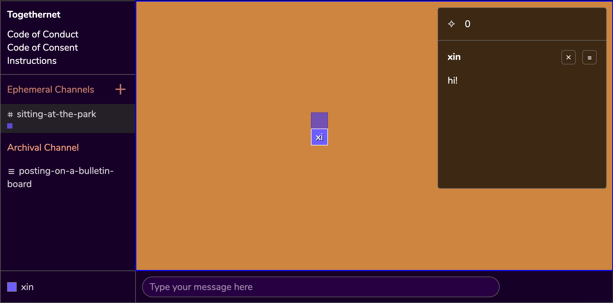

Welcome!
Hi! Thank you for visiting Togethernet's website. We're thrilled to have you here. Before diving deeper, we would like to invite you to learn about a couple possible ways to navigate this website –
Visual
- If you prefer viewing this website in higher contrast, click on the "+" sign on the upper-right corner to turn on the High Contrast Mode.
Text-Only
- We have also rendered this site into text-only documents, hosted on Google Doc.
We understand that access needs are nuanced, intersectional and expansive, and we welcome you reaching out to ask a question or make an accessibility request.
Email UsWhat is Togethernet?
Togethernet is a collaborative archiving software in the form of a desktop web app that allows both peer-to-peer(P2P), traceless messaging as well as archived communications.
Designed around the ethos of data transparency and consent, the goal of the software is to transform digital rights practices such as the right to be forgotten into an embodied practice through the reimagination of software architecture and user experience.
This tool and initiative stands on the shoulder of Consentful Tech Zine by Una Lee and Dann Toliver and Design Justice Network Principles — by considering transparency and consent every step of the way, the source code serves as both a technical and a moral document that seeks to uncover systems of power and uncertainties embedded in network technologies.
How does it work?
Togethernet contains two types of communication channels: the Ephemeral Channel and the Archival Channel.
Ephemeral Channel
The Ephemeral Channel uses the WebRTC peer-to-peer protocol, which means conversations do not go through a centralized server and are permenantly erased once the browser closes.
PRIVACY SCENARIO: using the Ephemeral Channel is comparable to talking to friends on a picnic blanket at the park — your conversations won’t be heard unless someone is intentionally trying to listen in.
Archival Channel
The Archival Channel publishes meeting notes to a centeralized database that your organization may self-host or host on a third party’s server.
PRIVACY SCENARIO: using the Archival Channel is comparable to posting a note on a bulletin board — your words are now floating out there on the World Wide Web as a form of public record, and others may quote or use it in ways that are outside of your control. Organizations often need to create content that needs to be seen by the public and this is useful for that.
Is Togethernet for me?
Togethernet is created with micro-communities in mind. In particular, those who work under the broad umbrella of art, design, culture and technology. This software is for you if you are an artist, designer, community organizer, technologist, researcher, educator, or student interested in –
- Exiting surveillance capitalism
- Participating in consentful communications on the web
- Building community-owned digital archives
Use Cases
- You may be a book club, and instead of defaulting to facebook groups, you might use Togethernet to create a list of books to read.
- You may be a group of art students working on a community agreement, and instead of defaulting to google doc you might use Togethernet to document your collective needs.
- You may be a group of community organizers, and instead of defaulting to instagram you might use Togethernet to save a list of Teach-In content to generate an HTML page to be uploaded to your website.
Known Vulnerabilities
That said, this software is still in an experimental stage and there are known vulnerabilities. If you're someone who is looking to work with highly sensitive content or if you're concerned with targeted surveillance, we recommend you looking into Signal.
If you're feeling ready to dig deeper, we inivite you to the Getting Started page.
Ready to Proceed